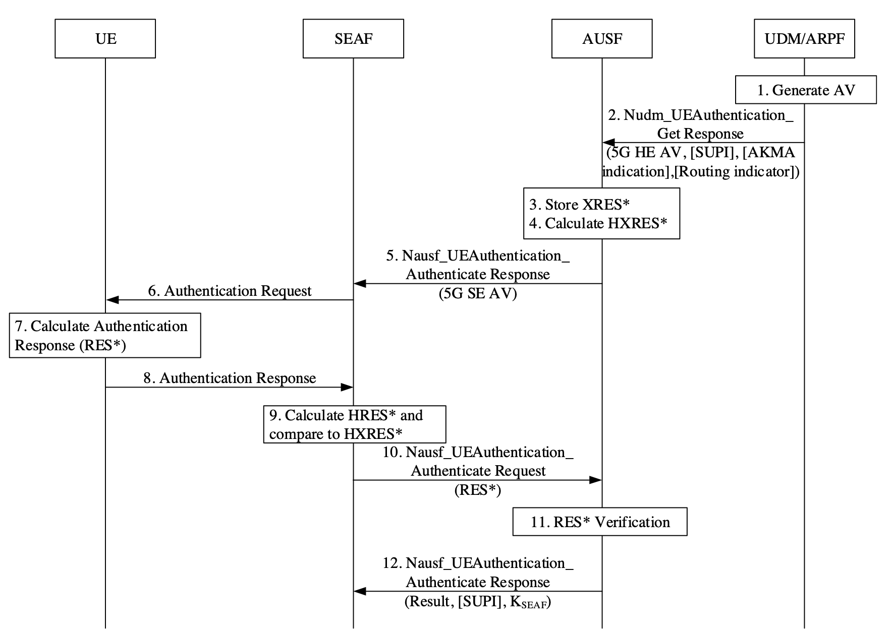

Introduction to 5G AKA
Note
Author: Che-Wei Lin
Date: 2025/10/29
Introduction
The 5G Authentication and Key Agreement (5G AKA) protocol is the primary authentication mechanism defined by 3GPP to secure communication between a user device (UE) and the network. It ensures mutual authentication between the User Equipment (UE), the Serving Network (SN), and the Home Network (HN), while also generating cryptographic keys used to protect subsequent data exchanges.
In this article, we’ll walk through the 5G AKA procedure and highlight selected segments of its implementation in free5GC, combining protocol concepts with practical implementation.
Quick terms
USIM: Secure element holding the long-term key K and performing AKA functionsSEAF: Security Anchor Function (typically co-located with AMF; holds anchor keys)ARPF: Authentication credential Repository and Processing Function (in UDM; generates auth vectors)SUPI: Subscriber permanent identifierSUCI: Concealed SUPISNname (SNN): Serving Network NameRES*: UE’s computed responseXRES*: Expected response computed on the home sideHRES*/HXRES*: Hashed versions used for verification at AUSF/SEAF boundaryCK,IK: AKA cipher/integrity base keys used as inputs to 5G KDFsK: Long-term secret in USIM and ARPFK_AUSF: Key derived from CK/IK and SNN on both UE and AUSF sidesK_SEAF: Anchor key delivered to the serving network after successful authK_AMF: Key derived at UE and AMF from K_SEAF; source for NAS/AS keys
5G AKA procedure and steps (with free5GC code spotlights)
5G AKA follows a challenge-and-response protocol. At a high level, the UE proves knowledge of a secret (K) shared with its home network. The home network creates an authentication challenge; the UE validates it and computes a response. If the response matches what the home network expects, both sides derive fresh keys and the serving network gets an anchor key to secure the session.
Here is an overview of how the 5G AKA procedure works:

Figure 1. The 5G AKA procedure (source: 3GPP TS 33.501).
Note: The step numbers in the following explanation do not strictly correspond to those shown in the figure above.
1. Registration request and identity protection
- UE → gNB → AMF/SEAF: Sends a Registration Request carrying
SUCI.
2. Vector acquisition from the home network
- SEAF/AMF → AUSF: Ask for an auth vector.
- AUSF → UDM/ARPF: Request 5G-HE-AKA vector for the subscriber (UDM de‑conceals
SUCItoSUPI). - UDM/ARPF generates
RAND,AUTN,RES,CK,IK; then derivesXRES*andK_AUSF.
Code spotlight (XRES* derivation and 5G-HE auth vector)
udm/internal/sbi/processor/generate_auth_data.go:
// Key = CK || IK, per TS 33.501
key := append(CK, IK...)
FC := ueauth.FC_FOR_RES_STAR_XRES_STAR_DERIVATION
P0 := []byte(authInfoRequest.ServingNetworkName) // SNN
P1 := RAND
P2 := RES
kdfValForXresStar, err := ueauth.GetKDFValue(
key, FC,
P0, ueauth.KDFLen(P0),
P1, ueauth.KDFLen(P1),
P2, ueauth.KDFLen(P2),
)
xresStar := kdfValForXresStar[len(kdfValForXresStar)/2:]
// Fill in rand, xres, autn, ckPrime, ikPrime
av.Rand = hex.EncodeToString(RAND)
av.Xres = hex.EncodeToString(RES)
av.Autn = hex.EncodeToString(AUTN)
av.CkPrime = hex.EncodeToString(ckPrime)
av.IkPrime = hex.EncodeToString(ikPrime)
av.AvType = models.AvType_EAP_AKA_PRIME
3. Network challenges the UE
- AUSF → AMF: Provides
RAND,AUTN, andHXRES*plusSNNcontext. - AMF → UE: Sends NAS Authentication Request (
RAND,AUTN).
Code spotlight (AUSF computing HXRES* to include in 5G-SE AV):
ausf/internal/sbi/processor/ue_authentication.go:
// Derive HXRES* from XRES*
concat := authInfoResult.AuthenticationVector.Rand + authInfoResult.AuthenticationVector.XresStar
var hxresStarBytes []byte
if bytes, err := hex.DecodeString(concat); err != nil {
// ...
} else {
hxresStarBytes = bytes
}
hxresStarAll := sha256.Sum256(hxresStarBytes)
hxresStar := hex.EncodeToString(hxresStarAll[16:]) // last 128 bits
Code spotlight (AMF building Authentication Request)
amf/internal/gmm/message/build.go:
// Set RAND (16 bytes) into NAS IE
rand, err := hex.DecodeString(av5gAka.Rand)
if err != nil { return nil, err }
authenticationRequest.AuthenticationParameterRAND =
nasType.NewAuthenticationParameterRAND(nasMessage.AuthenticationRequestAuthenticationParameterRANDType)
var tmp [16]byte
copy(tmp[:], rand[0:16])
authenticationRequest.AuthenticationParameterRAND.SetRANDValue(tmp)
// Set AUTN (16 bytes) into NAS IE
autn, err := hex.DecodeString(av5gAka.Autn)
if err != nil { return nil, err }
authenticationRequest.AuthenticationParameterAUTN =
nasType.NewAuthenticationParameterAUTN(nasMessage.AuthenticationRequestAuthenticationParameterAUTNType)
copy(tmp[:], autn[0:16])
authenticationRequest.AuthenticationParameterAUTN.SetAUTNValue(tmp)
4. UE validates AUTN and computes RES*, derives keys
- UE checks
AUTNMAC andSQNfreshness; if ok, computesRES,CK,IK. - UE derives
RES*,K_AUSF(fromCK||IK,SNN,SQN⊕AK) and thenK_SEAFfromK_AUSF; derivesK_AMFlater withSUPIbinding andABBA.
Code spotlight (UE test harness deriving K_AUSF → K_SEAF → K_AMF)
free5gc/test/ranUe.go:
P1 := SQNxorAK
Kausf, err := ueauth.GetKDFValue(key, FC, P0, ueauth.KDFLen(P0), P1, ueauth.KDFLen(P1))
if err != nil { fatal.Fatalf("GetKDFValue error: %+v", err) }
P0 = []byte(snName)
Kseaf, err := ueauth.GetKDFValue(Kausf, ueauth.FC_FOR_KSEAF_DERIVATION, P0, ueauth.KDFLen(P0))
if err != nil { fatal.Fatalf("GetKDFValue error: %+v", err) }
P0 = []byte(groups[1]) // SUPI digits
L0 := ueauth.KDFLen(P0)
P1 = []byte{0x00, 0x00} // ABBA
L1 := ueauth.KDFLen(P1)
ue.Kamf, err = ueauth.GetKDFValue(Kseaf, ueauth.FC_FOR_KAMF_DERIVATION, P0, L0, P1, L1)
if err != nil { fatal.Fatalf("GetKDFValue error: %+v", err) }
5. Serving-network verification and AUSF confirmation
- UE → SEAF: Sends
RES*in NAS Authentication Response. - SEAF computes
HRES* = SHA-256(RAND || RES*)and compares withHXRES*. If they match, authentication is successful from the serving network viewpoint; SEAF forwardsRES*to AUSF for home-network confirmation. - AUSF compares
RES*with storedXRES*. If equal, AUSF confirms success and providesK_SEAF(andSUPIifSUCIwas used).
Code spotlight (AUSF: RES* confirmation and return of K_SEAF)
ausf/internal/sbi/processor/ue_authentication.go:
// Compare RES* with stored XRES*
if strings.EqualFold(updateConfirmationData.ResStar, ausfCurrentContext.XresStar) {
confirmDataRsp.AuthResult = models.AusfUeAuthenticationAuthResult_SUCCESS
confirmDataRsp.Supi = currentSupi
confirmDataRsp.Kseaf = ausfCurrentContext.Kseaf
} else {
ausfCurrentContext.AuthStatus = models.AusfUeAuthenticationAuthResult_FAILURE
confirmDataRsp.AuthResult = models.AusfUeAuthenticationAuthResult_FAILURE
}
6. Security context establishment in the serving network
- UE and AMF derive
K_AMFfromK_SEAF, then NAS keys; gNB later derivesK_gNBand AS keys for RRC/UP.
Code spotlight (UE test harness deriving NAS algorithm keys from K_AMF)
free5gc/test/ranUe.go:
// Security Key
P0 := []byte{security.NNASEncAlg}
L0 := ueauth.KDFLen(P0)
P1 := []byte{ue.CipheringAlg}
L1 := ueauth.KDFLen(P1)
kenc, err := ueauth.GetKDFValue(ue.Kamf, ueauth.FC_FOR_ALGORITHM_KEY_DERIVATION, P0, L0, P1, L1)
if err != nil { fatal.Fatalf("GetKDFValue error: %+v", err)}
copy(ue.KnasEnc[:], kenc[16:32])
// Integrity Key
P0 = []byte{security.NNASIntAlg}
L0 = ueauth.KDFLen(P0)
P1 = []byte{ue.IntegrityAlg}
L1 = ueauth.KDFLen(P1)
kint, err := ueauth.GetKDFValue(ue.Kamf, ueauth.FC_FOR_ALGORITHM_KEY_DERIVATION, P0, L0, P1, L1)
if err != nil { fatal.Fatalf("GetKDFValue error: %+v", err)}
copy(ue.KnasInt[:], kint[16:32])
7. Resynchronization (only if needed)
- If UE detects
AUTNfailure due to sequence number drift, UE → SEAF/AMF: SendsAUTSfor resync. - AUSF relays resync to UDM; UDM re-generates vectors with new
SQNand flow restarts.
Code spotlight (UDM Milenage helpers used for MAC-A/MAC-S and AK/AUTN calculations)
udm/internal/util/milenage.go:
// Generate AKA params and extract AUTN tail (MAC-A)
ik, ck, xres, autn, err := milenage.GenerateAKAParameters(opc, k, rand, sqn, amf)
// For MAC-S, use resync AMF (0000)
resyncAMFBytes, err := hex.DecodeString("0000")
if err != nil {return err}
ikS, ckS, xresS, autnS, err := milenage.GenerateAKAParameters(opc, k, rand, sqn, resyncAMFBytes)
8. Re‑authentication and handovers
- 5G supports efficient re‑auth flows and a key hierarchy so that subsequent procedures (e.g., mobility, handovers, access changes) don’t require repeating full home authentication unless needed.
KDF reference used across free5GC
free5GC’s shared KDF utility implements TS 33.220/33.501 HMAC‑SHA256 KDF and function codes
util/ueauth/ueauth.go:
const (
FC_FOR_CK_PRIME_IK_PRIME_DERIVATION = "20"
FC_FOR_KSEAF_DERIVATION = "6C"
FC_FOR_RES_STAR_XRES_STAR_DERIVATION = "6B"
FC_FOR_KAUSF_DERIVATION = "6A"
FC_FOR_KAMF_DERIVATION = "6D"
FC_FOR_KGNB_KN3IWF_DERIVATION = "6E"
FC_FOR_NH_DERIVATION = "6F"
FC_FOR_ALGORITHM_KEY_DERIVATION = "69"
FC_FOR_KTIPSEC_KTNAP_DERIVATION = "84"
)
func GetKDFValue(key []byte, FC string, param ...[]byte) ([]byte, error) {
kdf := hmac.New(sha256.New, key)
var S []byte
if STmp, err := hex.DecodeString(FC); err != nil {return nil, fmt.Errorf("GetKDFValue FC decode failed: %+v", err)}
else {
S = STmp
}
for _, p := range param {
S = append(S, p...)
}
if _, err := kdf.Write(S); err != nil {return nil, fmt.Errorf("GetKDFValue KDF write failed: %+v", err)}
sum := kdf.Sum(nil)
return sum, nil
}
Conclusion
Through its structured challenge–response process and layered key system, 5G AKA enables mutual authentication between the UE, serving network, and home network while securely generating session-specific keys. By exploring the protocol together with its implementation in free5GC, we can see how 3GPP’s specifications are brought to life in software—from authentication vector generation and verification to the derivation of keys across different network functions.
Reference
- TS 33.501
- 5G Security
- 5G AKA协议详解
- References to implementation:
- AUSF, HXRES*, K_SEAF, confirmation: ausf/internal/sbi/processor/ue_authentication.go
- UDM, vector and XRES*, K_AUSF: udm/internal/sbi/processor/generate_auth_data.go
- AMF, NAS Authentication Request build: amf/internal/gmm/message/build.go
- Util KDF: util/ueauth/ueauth.go
- UE test harness (KAMF/NAS keys): free5gc/test/ranUe.go
About
Hello! I'm Che Wei, Lin, and I’ve recently begun my journey into 5G technology and the free5GC community. I hope you found this blog post helpful, and please feel free to reach out if you notice any errors or have suggestions for improvement.
Connect with Me
- GitHub: Zach1113